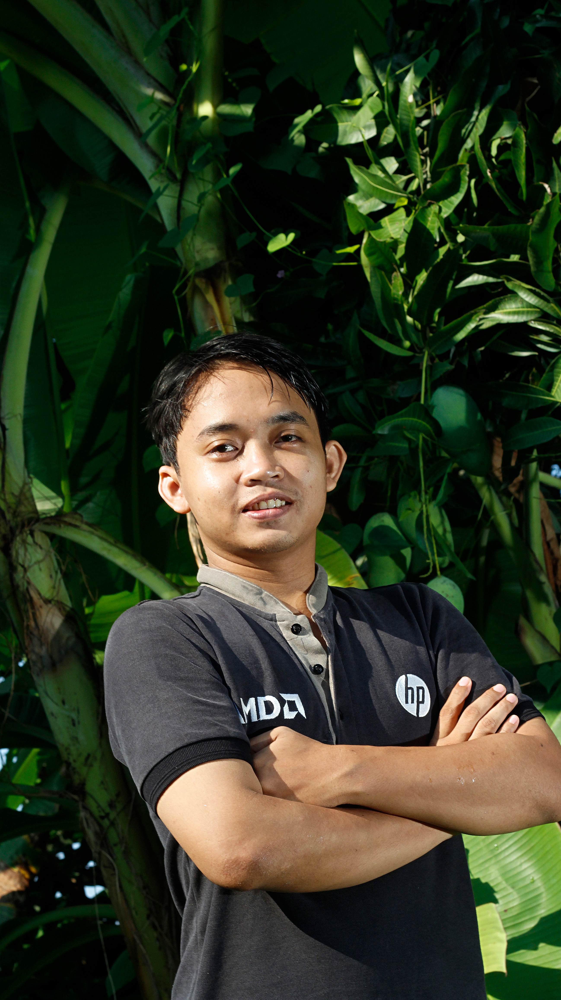

FOTOGRAFER · INDONESIA
Menangkap yang
sering terlewat.
Saya Sigit Pramono. Menemukan cerita dalam cahaya, tempat, dan momen-momen kecil di antaranya.
JELAJAHI KARYA ↓01 — 04DI ANTARA CAHAYA DAN SUNYI
CERITA VISUAL DARI PERJALANAN
HALO, SAYA SIGIT PRAMONO | MASPRAM

SIGIT PRAMONODunia terasa berbeda
saat kita melihat lebih dekat.
Fotografi bagi saya adalah cara untuk berhenti sejenak. Dari lanskap yang luas sampai detail yang sederhana, setiap foto menyimpan cerita yang ingin saya bagikan — dan mungkin, Anda bawa pulang.
KENALI SAYA ↗PILIHAN DARI LENSA SAYA
Potongan cerita.
Setiap tempat punya ritmenya sendiri.
Ini beberapa yang sempat saya temui.
* FOTO DI ATAS ADALAH FOTO CONTOH. GANTI DENGAN KARYA FOTOGRAFI ANDA SENDIRI.
DARI LAYAR KE RUANG ANDA
Simpan cerita
yang Anda suka.
Beberapa foto kini hadir sebagai produk yang bisa menemani keseharian Anda. Temukan koleksi print dan merchandise saya di Ciptaloka.
KUNJUNGI TOKO SAYA ↗TAUTAN TOKO Ciptaloka DAPAT DIGANTI DENGAN LINK TOKO ANDA.PUNYA CERITA UNTUK DIBUAT?
Mari buat
sesuatu yang berarti.
NGOBROLYUK↗
Kolaborasi, proyek, atau sekadar menyapa — pintu saya terbuka.HALO@MasPram